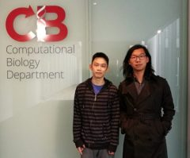

For any general questions contact us:
help@cbd.cmu.edu
For questions about the available computing resources in our department contact us:
computing@cbd.cmu.edu
7725 Gates-Hillman Complex
5000 Forbes Avenue
Pittsburgh, PA 15213
(412) 268-2474
help@cbd.cmu.edu
http://cbd.cmu.edu
http://www.facebook.com/cmucbd
http://twitter.com/cmucompbio
http://www.instagram.com/cmucbd
October 18, 2017
Based on analysis by csrankings.org, Carnegie Mellon is the front-runner in computational biology. The rankings are based upon accepted proceedings papers at the top computational biology conferences, ISMB and RECOMB. These conferences typically accept only around 15% of submitted papers and the number of accepted papers over many years is a strong indication of Carnegie Mellon’s leadership in framing novel biomedical research questions in computational terms and developing rigorous and scalable solutions. Carnegie Mellon was also ranked first across all of computer science, consistent with many other ranking metrics.
October 30, 2017
Doing undergraduate research for credit has long been an option exercised at Carnegie Mellon and other universities, but the Computational Biology Department has gone a step further and is guaranteeing that all students in its new undergraduate degree program will be able to pursue a semester-long research experience should they wish to.“Our faculty want to make it a central feature of our program,” said Phillip Compeau, assistant department head for education. “We believe this will be a way to attract students,” he added, noting computational biology majors may be particularly interested in research compared to other students in the School of Computer Science.
November 13, 2017
Computational biologists at Carnegie Mellon University have developed a more accurate computational method for reconstructing the full-length nucleotide sequences of the RNA products in cells, called transcripts, that transform information from a gene into proteins or other gene products. Their software, called Scallop, will help scientists build a more complete library of RNA transcripts and thus help scientists better understand the regulation of gene expression. A report on Scallop by Carl Kingsford, associate professor of computational biology, and Mingfu Shao, Lane Fellow in the School of Computer Science’s Computational Biology Department, is being published online today by the journal Nature Biotechnology.
November 14, 2017
December 5, 2017
Natalie Sauerwald, a 3rd year Ph.D student, has been awarded the Richard King Mellon Foundation Presidential Scholarship in the Life Sciences. She is a member of Dr. Carl Kingsford’s lab. Congratulations, Natalie!
December 8, 2017
At a ceremony this week, Professor Ziv Bar-Joseph was appointed FORE Systems Professor of Computational Biology and Machine Learning. Professor Bar-Joseph is a world leader in computational methods for understanding dynamic biological systems, a critical area of research given that our cells and bodies are continuously changing. He joined Carnegie Mellon in 2003 and played an important role in the development of the Joint Carnegie Mellon University-University of Pittsburgh Ph.D. Program in Computational Biology, which he currently directs (with James Faeder from the University of Pittsburgh). He is well known for developing and applying rigorous computational and machine learning methods to biomedical problems. His group has published extensively both in high impact journals and highly competitive conferences. He is also principal investigator (with Gregory Cooper at the University of Pittsburgh) of Big Data for Better Health, a large, multi-investigator project funded by the Pennsylvania Department of Health.
December 12, 2017
The Computational Biology Department recently sponsored Fox Chapel Area High School’s STEM Junction Symposium, an all-day bioinformatics event hosting 180 students from the Pittsburgh area. The Symposium was organized by Fox Chapel senior Shania Khatri to introduce high school students with an interest in computer science and biology to the growing field of computational biology. The Symposium is one of the first of its kind for a high school audience, but this did not dissuade Khatri. “I was convinced,’ Khatri says, ‘that there should be opportunities for high school students to explore bioinformatics.” The students in attendance were able to choose from multiple breakout sessions led by speakers from both Pittsburgh academia and industry. Dr. Robert Murphy, Dr. Carl Kingsford, Dr. Phillip Compeau, and Dr. Hosein Mohimani were among the speakers for these sessions.
January 10, 2018
Xiangrui Zeng, a first year PhD student in the Joint Carnegie Mellon-University of Pittsburgh Ph.D. program (CPCB), has been conducting a research project under the guidance of Dr. Min Xu. His first-authored paper detailing the outcome of this project title “A convolutional autoencoder approach for mining features in cellular electron cryo-tomograms and weakly supervised coarse segmentation” has been accepted by Journal of Structural Biology. Congratulations Xiangrui on the outstanding performance!
January 22, 2018
A team of American and Russian computer scientists has developed an algorithm that can rapidly search databases to discover novel variants of known antibiotics – a potential boon in fighting antibiotic resistance. In just a few hours, the algorithm, called VarQuest, was able to identify 10 times more variants of peptidic natural products, or PNPs, than all previous PNP discovery efforts combined, the researchers report in the latest issue of the journal Nature Microbiology. Previously, such a search might have taken hundreds of years of computation, said Hosein Mohimani, assistant professor in Carnegie Mellon University’s Computational Biology Department. He and Pavel A. Pevzner, professor of computer science at the University of California, San Diego, designed and directed the effort, which included colleagues at St. Petersburg State University in Russia.
January 25, 2018
Yang Yang, a third-year PhD student in the Joint Carnegie Mellon-University of Pittsburgh Ph.D. Program in Computational Biology (CPCB), joined the Computational Biology Department in January 2016 and has been working on computational genomics. Yang received her B.E. degree in Automation and M.S. degree in Control Science and Engineering both from Tsinghua University in China. In 2015, she joined Dr. Jian Ma’s research group at the University of Illinois at Urbana-Champaign. When Dr. Ma accepted his position with Carnegie Mellon at the beginning of 2016, Yang also transferred to the University.
January 29, 2018
Researchers at Carnegie Mellon University have developed a new dynamic statistical model to visualize changing patterns in networks, including gene expression during developmental periods of the brain. Published in the Proceedings of the National Academy of Sciences, the model now gives researchers a tool that extends past observing static networks at a single snapshot in time, which is hugely beneficial since network data are usually dynamic. The analysis of network data—or the study of relationships from a large-scale view—is an emerging field of statistics and data science. Read Full article on CBD website!
January 31, 2018
Aligning DNA sequences has been and remains one of the fundamental tool in computational biology. It is widely used to compare genomes, to find SNPs and genome variations, and as a step in many other bioinformatics pipelines.
MUMmer, a widely used alignment package in genomics, was originally published in 1999 when the number and the size of available genome sequences was still small. It has been updated a few times since and the third version MUMmer3 remains a very popular genome to genome aligner.
MUMmer4 is the latest update written by Guillaume Marçais, Project Scientist in the Carnegie Mellon Computational Biology Department. It is a backward compatible version with MUMmer3, while being more versatile, being able to handle much larger sequences and faster. MUMmer4 handles genome to genome comparison as well as aligning short and long reads to a reference genome.
February 5, 2018
Lane Fellow Dan DeBlasio, along with his PhD advisor John Kececioglu, recently published a book titled “Parameter Advising for Multiple Sequence Alignment”, which details a method to select input-specific parameter choices for the fundamental problem of multiple sequence alignment. Using Parameter Advising can produce higher quality alignments, which leads to improvements in downstream analyses like protein structure prediction, phylogenetic inference, or homology search. The accuracy of multiple sequence alignments can be greatly impacted by choosing non-ideal parameter settings (and in turn the downstream analyses), and while the default parameter settings work well on average, they may produce poor results on some input. The book also describes Facet (short for Feature-based Accuracy Estimator) which when used with Parameter Advising can automatically select improved parameters for any input set of protein sequences.
February 15, 2018
Andreas Pfenning, an assistant professor of Computational Biology, develops computational and experimental genomic techniques to study how genetic differences influence complex traits, with a focus on the brain. He applies these techniques across species to study how the genome evolved for speech and language production. His group also studies the genetic mechanisms of Alzheimer’s disease and aging in humans. Pfenning became a faculty member in 2016 after a joint postdoctoral graduate position at MIT and Harvard Medical School. He earned a Ph.D. in computational biology and bioinformatics at Duke University, and a bachelor’s degree in computer science at Carnegie Mellon. He has published a number of high-impact papers in Nature, Science, Cell and the Proceedings of the National Academy of Science.
March 1, 2018
Associate Professor Carl Kingsford & Lane Fellow Heewook Lee have published a paper in Genome Biology. The paper discusses the importance of accurate typing of human leukocyte antigen (HLA). HLA genes play important roles in immune responses and disease genesis. Previously available computational methods are database-matching approaches and their outputs are inherently limited by the completeness of already known types, making them unsuitable for discovery of novel alleles. Kingsford and Lee have developed a graph-guided assembly technique for classical HLA genes, which can construct allele sequences given high-coverage whole-genome sequencing data. Their method delivers highly accurate HLA typing, comparable to the current state-of-the-art methods.
March 20, 2018
Members of the Computational Biology Department have developed a directory that can be used to search for companies and organizations that provide internships and full-time opportunities to students in computational biology. Students can search for companies of interest by keyword, location, and area of interest. Each company page contains information about the company along with links to Twitter and LinkedIn. A job board will be frequently updated with positions provided by employers, and listing both internal and external opportunities for internships, jobs and summer programs throughout the country.
April 3, 2018
Multiple members of Carl Kingsford’s group have had their papers accepted to ISMB 2018. Natalie Sauerwald and Carl Kingsford’s paper titled Quantifying the similarity of topological domains across normal and cancer human cell types discusses “three-dimensional chromosome structure has been increasingly shown to influence various levels of cellular and genomic functions. The second paper, authored by Guillaume Marçais, Dan DeBlasio and Carl Kingsford, is titled Asymptotically optimal minimizers schemes. "From the analysis of the asymptotic behavior of minimizers, forward and local schemes, we show that the previously believed lower bound on minimizers schemes does not hold, and that schemes with density lower than thought possible actually exist."
April 10, 2018
|  | |
Two first year students in our Computational Biology Ph.D. program and one recent graduate of the M.S. in Computational Biology program have had papers accepted for ISMB 2018. Xiangrui Zeng’s paper proposes an integrated method for electron subtomogram averaging and classification called Fast Alignment Maximum Likelihood (FAML). Yixiu Zhao, a third-year undergraduate in Computer Science collaborated on this paper. Both are in Min Xu’s research group. Ruochi Zhang's paper discusses a new machine learning algorithm to demonstrate that sequence-based features can predict if a pair of convergent CTCF motifs would form a chromatin loop. He is in Jian Ma’s group. Jesse Eaton’s paper describes a method to reconstruct the progression of cancers by accumulating genetic variations. Jingyi Wang, a recent graduate of CMU's M.S. Biomedical Engineering program, collaborated on this paper.
April 11, 2018
We are very pleased that six papers by members of the Computational Biology Department (CBD) have been accepted for presentation at ISMB 2018, one of the most selective computational biology conferences. ISMB 2018 accepted 65 papers out of a total of 331 submissions. This year’s results continue Carnegie Mellon’s leadership in accepted papers at ISMB that has been ongoing for many years. The first authors of two of the papers are first-year students in our Computational Biology Ph.D. program and the first author of a third is a recent graduate of our M.S. in Computational Biology program.
May 17, 2018
This fall Mingfu Shao, a Lane Fellow in the Computational Biology Department at Carnegie Mellon University, will join Pennsylvania State University as a tenure-track Assistant Professor in the Department of Computer Science and Engineering. He will be co-hired by the Huck Institutes of the Life Sciences, facilitating his interdisciplinary and collaborative research at the interface of computer science and biology. In recognition of his highly impactful work, Mingfu has been awarded the prestigious Charles K. Etner Career Development Professorship in Engineering at Penn State. Mingfu’s recent work as a Lane Fellow with CMU Associate Professor Carl Kingsford has been to design efficient algorithms for high-throughput gene expression analyses. He plans to continue his research on developing new, more efficient algorithms to solve challenging problems in biology in his new position.